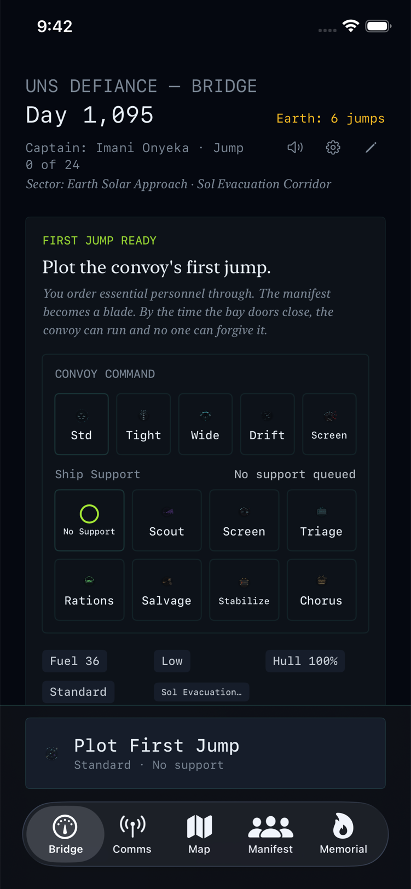
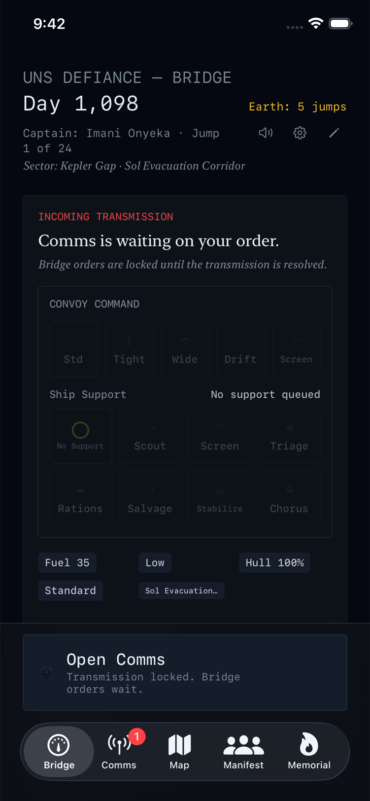
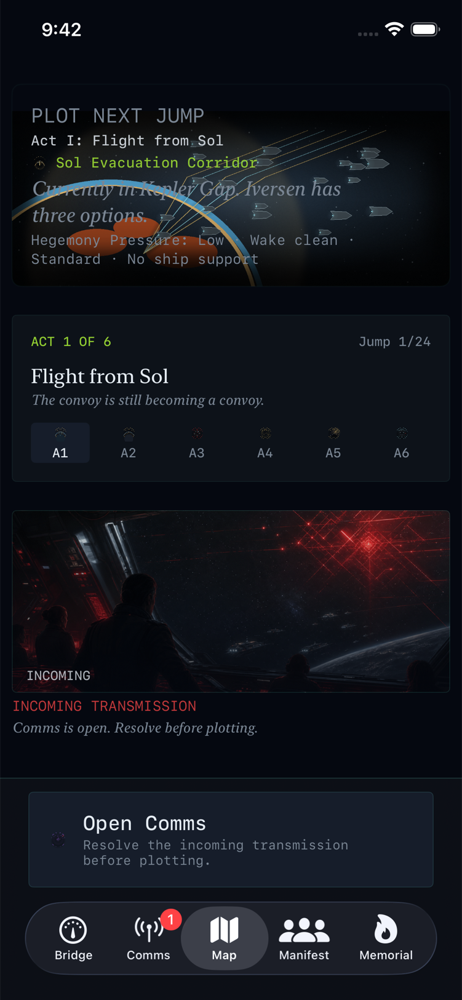
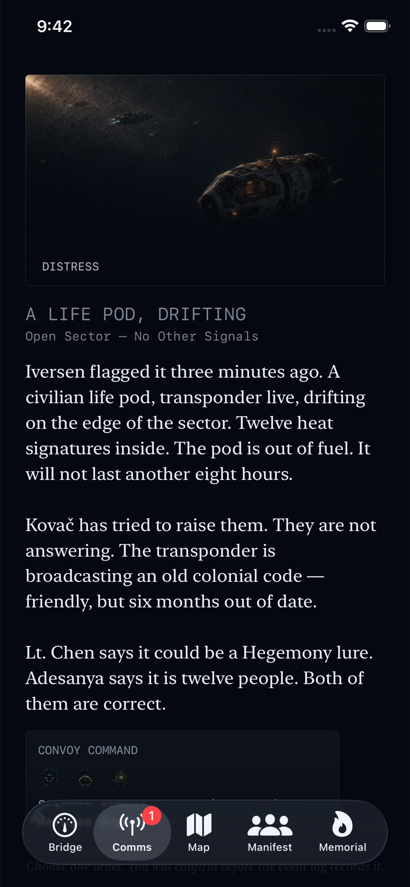

iPhone survival command game
The Long Retreat
Lead the last civilian convoy through 24 jumps. Every order is final, every loss stays in the record, and the convoy keeps moving.

How It Works
From the Bridge of the UNS Defiance, you choose routes, assign ship support, and answer transmissions while fuel drops and pursuit pressure rises. The run log is append-only, and the Memorial follows the convoy until the end.
24jumps in a focused campaign
144hand-written encounters
0ads, IAP, accounts, or online dependency
1public page; the source stays private
Product Screenshots
Real product screenshots from the official site.



Source Code Boundary
This GitHub repository is only the public page. It does not include app source code, project files, private config, internal docs, build artifacts, release workflows, secrets, or local app outputs.